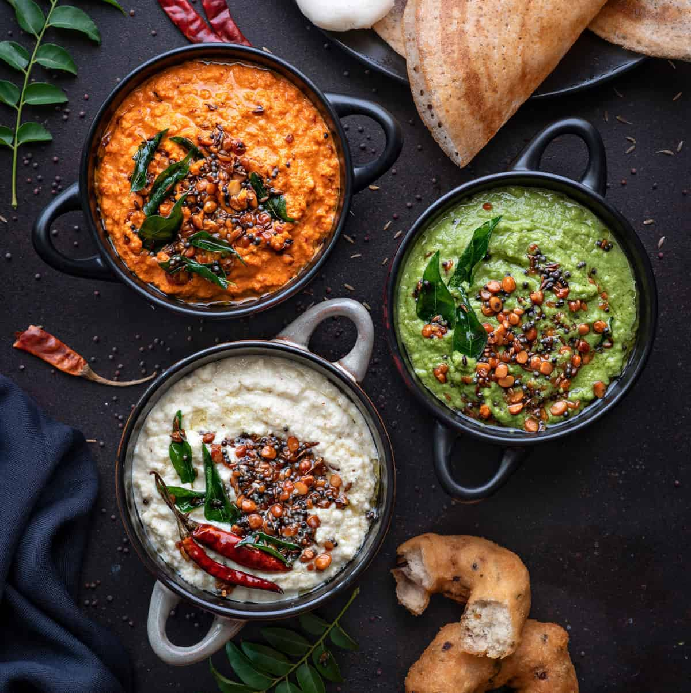

Dosa is a staple South Indian dish that is made with fermented batter made of rice & ground Urad Dal (lentils) with curd. Although being a staple diet of Southern India, it has gained a lot of popularity in the North as well and is eaten all around the country with a lot of pleasure. Generally considered a breakfast food, many people love to relish this dish for lunch or sometimes even dinner.
Since fermentation requires time, so does soaking the rice and dal (the preparation of the batter takes time), many people prefer to buy ready-to-use batters. One of the first and biggest companies to do so was iD Fresh Foods.
Dosa is the anglicised name of the dish. The dish has different names in different southern languages:
- Tamil - dosai - dōsai
- Kannada - dose - dōse
- Malayalam - dosha - dōśa
- Telugu - dōsa

Dosa is usually accompanied by coconut chutney and sambar. Different restaurants and states have
different tastes of sambar, ranging from sweet to spicy, and people have their own opinions on which
is original and which is better. The right way to pronounce sambar is sambar (साम्बार), just letting
you know so that you don't offend any south indian foodie.
Though coconut chutney is what's usually served along with dosa, a few other chutneys too have come
into popular liking such as tomato chutney, mint chutney and peanut chutney. Another variation is the
chutney powder (called chutney pudi).
With all these, people have their likings about how they want their dosa to be. Some like thick dosa which are soft, some like them thin and crispy, some people like the masala wrapped in between the flaps, some like the masala separately, some like it with only chutney, some only with sambar and some with both (some without any sides?)